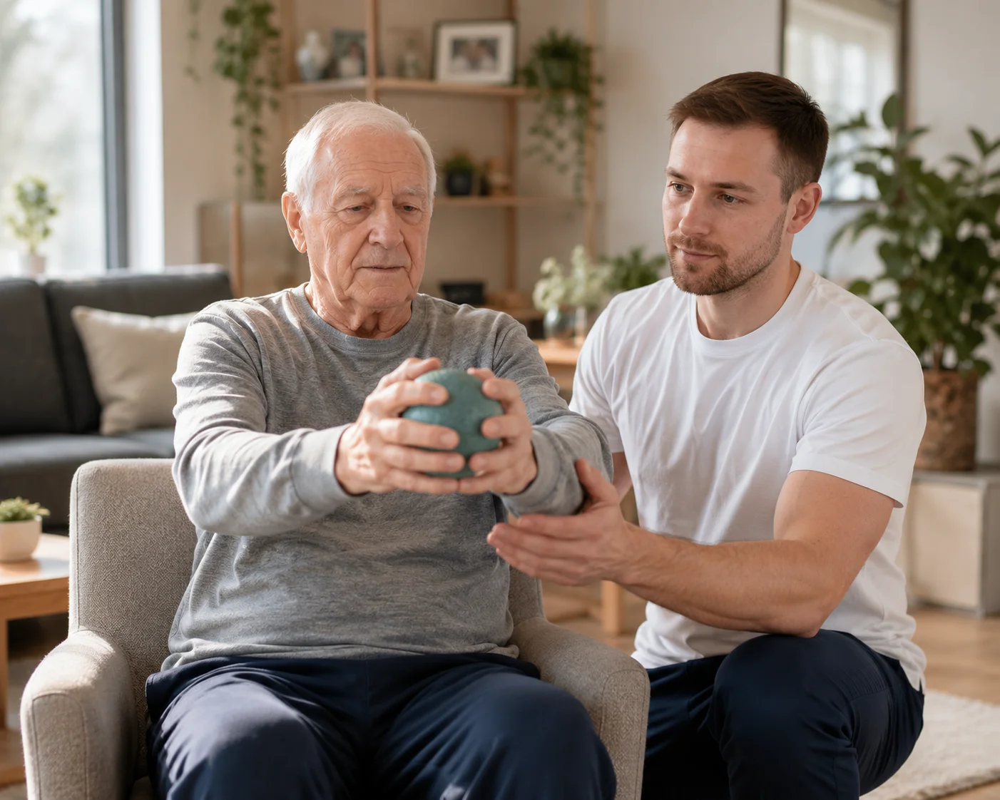

Een beroerte (ook wel CVA of cerebrovasculair accident) verandert van het ene op het andere moment het leven. Een arm of been doet niet meer wat u wilt, stappen wordt moeilijk en het evenwicht is verstoord. Het goede nieuws: met gerichte kinesitherapie kan het lichaam veel terugwinnen. De hersenen zijn namelijk in staat om nieuwe verbindingen te maken. In dit artikel leest u hoe revalidatie na een beroerte verloopt, welke rol kinesitherapie speelt en waarom behandeling aan huis hierbij zo waardevol is.
Belangrijk
Dit artikel geeft algemene informatie over revalidatie na een beroerte en vervangt geen persoonlijk medisch advies. Elke beroerte is anders. Volg altijd het revalidatieplan van uw neuroloog, revalidatiearts en kinesitherapeut.
Wat Gebeurt er bij een Beroerte?
Bij een beroerte raakt een deel van de hersenen beschadigd doordat de bloedtoevoer wegvalt. Dit kan komen door een verstopping van een bloedvat (herseninfarct) of door een bloeding (hersenbloeding). De zenuwcellen in het getroffen gebied krijgen geen zuurstof meer, waardoor de functies die zij aansturen uitvallen.
Afhankelijk van welk deel van de hersenen geraakt is, kunnen de gevolgen sterk verschillen. Veelvoorkomende lichamelijke gevolgen zijn:
- Halfzijdige verlamming (hemiplegie): verminderde kracht of controle in een arm en/of been aan één kant van het lichaam
- Verstoord evenwicht en moeite met rechtop zitten of staan
- Moeite met stappen en een veranderd looppatroon
- Spasticiteit: spieren die te gespannen zijn en stijf aanvoelen
- Verminderd gevoel of coördinatie in een lichaamshelft
Juist op deze lichamelijke gevolgen richt de neurologische kinesitherapie zich. Lees ook ons overzichtsartikel over neurologische kinesitherapie aan huis.
Waarom is Vroege Revalidatie zo Belangrijk?
Na een beroerte zijn de hersenen extra "kneedbaar". Dit vermogen om nieuwe verbindingen te vormen heet neuroplasticiteit. Door een functie keer op keer te oefenen, leren gezonde delen van de hersenen taken overnemen van het beschadigde gebied. Hoe vroeger en hoe consequenter er geoefend wordt, hoe beter de hersenen dit kunnen benutten.
Daarom start de revalidatie meestal al in het ziekenhuis, vaak binnen enkele dagen na de beroerte. Maar na ontslag stopt het herstel niet: juist het volhouden van de oefeningen thuis bepaalt voor een groot deel het uiteindelijke resultaat. Een onderbroken of te trage revalidatie laat kansen liggen.

De Fasen van Revalidatie na een Beroerte
Het herstel verloopt grofweg in fasen. Elke fase heeft eigen doelen, waar de kinesitherapeut de behandeling op afstemt:
eerste dagen
functies terugwinnen
oefenen in de praktijk
zelfstandigheid
| Fase | Doel | Voorbeeld van oefeningen |
|---|---|---|
| Acute fase | Complicaties voorkomen, eerste mobilisatie | Houding, passief bewegen, rechtop zitten |
| Vroeg herstel | Kracht en controle terugwinnen | Opstaan, gewicht dragen, eerste stappen |
| Thuisfase | Zelfstandig functioneren in het dagelijks leven | Stappen, trap, evenwicht, dagelijkse handelingen |
| Onderhoudsfase | Behoud en verdere verfijning | Conditie, kracht, valpreventie |
Goed om te weten
De grootste vooruitgang vindt vaak plaats in de eerste 3 tot 6 maanden, maar herstel kan ook daarna nog doorgaan. Volhouden loont. Een kinesitherapeut aan huis helpt u om de oefeningen vol te houden, ook als de motivatie wat terugvalt.
Waar Richt de Kinesitherapie zich op?
Na een beroerte werkt de kinesitherapeut aan verschillende doelen tegelijk. De behandeling wordt volledig afgestemd op uw mogelijkheden en groeit mee met uw herstel:
1. Evenwicht en Rompstabiliteit
Veilig rechtop zitten en staan is de basis voor alle verdere functies. De therapeut traint het evenwicht stap voor stap, eerst in zit, dan in stand. Onze blog over evenwichtsoefeningen thuis geeft hier extra voorbeelden van.
2. Stappen en Gangrevalidatie
Opnieuw leren stappen is voor veel patiënten het belangrijkste doel. Via gangrevalidatie werkt de therapeut aan een veiliger en vlotter looppatroon, eventueel met loophulpmiddelen.
3. Kracht in de Aangedane Lichaamshelft
Gerichte oefeningen activeren de verzwakte spieren van arm en been. Door veel te herhalen leren de hersenen deze spieren weer aansturen.
4. Soepelheid en Spasticiteit Tegengaan
Rek- en mobilisatieoefeningen houden de gewrichten soepel en helpen om te stijve, gespannen spieren (spasticiteit) onder controle te houden.
5. Dagelijkse Handelingen
Opstaan uit een stoel, naar het toilet gaan, de trap nemen: precies díe handelingen die thuis nodig zijn, worden ook thuis geoefend.
Waarom Kinesitherapie aan Huis na een Beroerte?
Na een beroerte is verplaatsen vaak lastig en vermoeiend. Kinesitherapie aan huis biedt daarom belangrijke voordelen, juist voor deze patiëntengroep:
- Geen verplaatsing nodig: geen stress en vermoeidheid van vervoer naar een praktijk
- Oefenen in de echte omgeving: de therapeut traint met úw stoel, úw trap, úw drempels, precies waar het er in het dagelijks leven op aankomt
- Veilige omgeving: in vertrouwde omstandigheden durven patiënten vaak meer en oefenen ze met meer zelfvertrouwen
- Betrokkenheid van de mantelzorger: partner of familie leert mee hoe ze kunnen helpen en ondersteunen
- Continuïteit: een vaste therapeut volgt uw vooruitgang van dichtbij op
PhysioVisit komt bij u thuis
PhysioVisit biedt neurologische kinesitherapie aan huis in de regio Grimbergen, Strombeek-Bever, Humbeek, Beigem en Koningslo. Onze therapeuten hebben ervaring met revalidatie na een beroerte en stemmen elke behandeling af op uw persoonlijke situatie.
De Rol van Familie en Mantelzorgers
Herstel na een beroerte is teamwerk. De mensen rond de patiënt spelen een grote rol. Als mantelzorger kunt u helpen door:
- De patiënt aan te moedigen om zelf te doen wat hij of zij kan, ook al duurt het langer
- Te helpen bij de oefeningen tussen de sessies door, zoals de therapeut voordoet
- Te zorgen voor een veilige woonomgeving (losse tapijten weg, goede verlichting, steungrepen)
- Geduld en begrip te tonen: herstel verloopt met ups en downs
De kinesitherapeut betrekt u hier graag bij en geeft praktische tips die op uw thuissituatie zijn afgestemd.
Veelgestelde Vragen over Kinesitherapie na een Beroerte
Revalidatie na een beroerte bij u thuis
PhysioVisit biedt neurologische kinesitherapie aan huis in de regio Grimbergen. Samen werken we stap voor stap aan uw herstel en zelfstandigheid.
Conclusie
Een beroerte (CVA) heeft vaak ingrijpende gevolgen, maar dankzij de neuroplasticiteit van de hersenen is er veel herstel mogelijk. Kinesitherapie speelt hierin een centrale rol: door gericht en herhaald te oefenen, winnen patiënten stap voor stap evenwicht, kracht en stapvermogen terug. De sleutel is vroeg beginnen en consequent volhouden, ook na ontslag uit het ziekenhuis.
Juist in die thuisfase maakt kinesitherapie aan huis het verschil: oefenen in de eigen omgeving, zonder de last van verplaatsing, met betrokkenheid van de familie. Heeft u of een naaste een beroerte gehad en wilt u thuis verder revalideren? Neem gerust contact op met PhysioVisit — we bekijken samen wat we voor u kunnen betekenen.